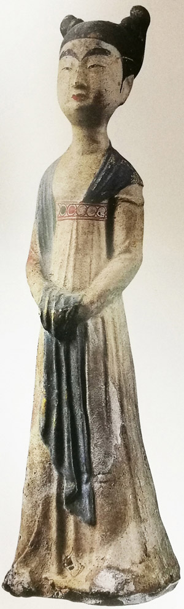
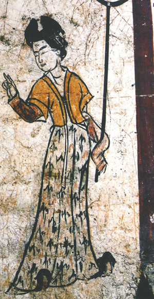
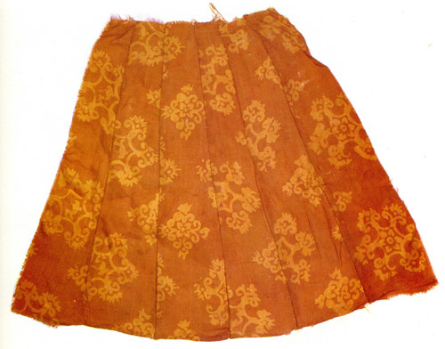
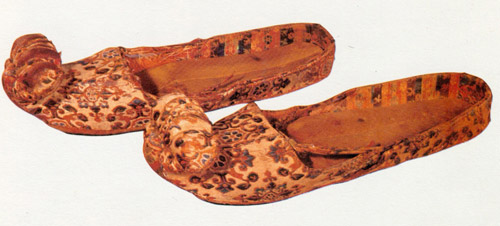

成年女性服饰
唐代女子除女着男装外，其主要服装样式是襦裙服。一般为上身着短襦或衫，下着长裙，有的还搭配帔帛，或者在外面套上半臂，足穿凤头丝履或线鞋。

唐代女子所穿的襦有各种各样的领口，有圆领、方领、鸡心领、斜领，颜色以红色居多，也有白色、青色和黄色等，唐代初期女子所着的襦一般为窄袖。中唐之后，襦或衫的袖不断加宽。盛唐时，还出现了袒领短襦，这样大胆的着装可谓是这时的一大特色。

下装以裙服为主。裙服面料多为丝织品，裙子长度比较长，且流行将裙腰提高到腋下，用丝带系扎，长裙曳地，更加凸显女子修长的体态。女子长裙有很多褶子，大多由六幅巾帛制成，并且多种颜色相间，称为间色长裙，如新疆阿斯塔纳墓就出土了一件印花六幅裙。裙子的颜色以红色最为流行，即人们常说的石榴裙，在很多唐代诗歌中都可以看到对它的描述，如元稹的“花砖曾立摘花人，窣破罗裙红似火。”陕西扶风法门寺地宫同样出土一件精美的石榴裙。

半臂和帔帛是襦裙服的重要组成部分。半臂是一种短袖上衣，一般多为对襟，长及腰间，两袖宽阔，长不掩肘，前面用丝带系扎。多加罩一件半臂，是初唐时期非常流行的装束，后期随着女装的肥大，半臂不再经常使用。除此之外，唐代女子通常还在肩背上披搭一条帛巾，称为帔帛，通常为轻薄的纱罗，上面印画各种花纹，帔帛两端垂在手臂旁边，或捧在胸前，下面垂至膝下，或一头系在裙子系带上，另一头绕过肩背自然下垂，在行走过程中，飘舞飞扬，平添一份洒脱之美。在唐代陶俑和墓葬壁画中经常可以见到披着帔帛的女子。
线鞋和蒲履由于其轻便的特点，很受一般妇女的欢迎，而贵妇一般则着笨重的凤头履等“规制亦重”的履。

总体看来，唐代初期女装衣裙窄小，这在初唐时期的墓葬壁画上可见，中唐之后，女装愈来愈肥，至晚唐，衣袖几可触地。